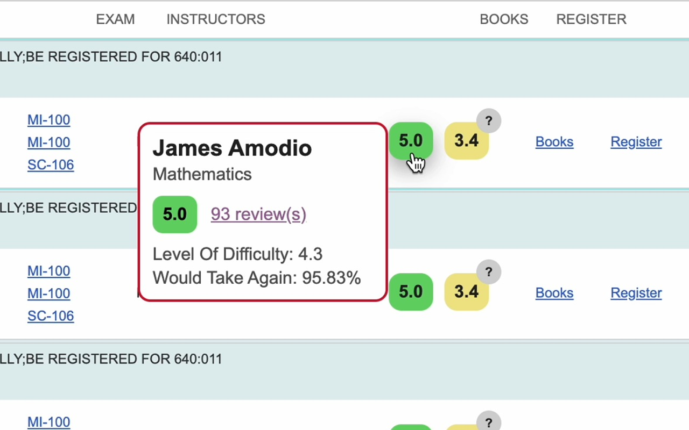
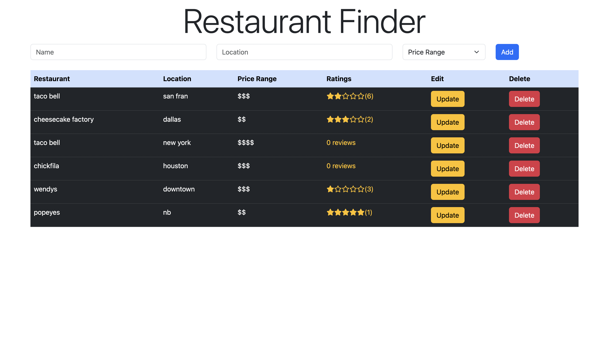

My Projects
Things I've built to solve real problems and explore new technologies.

Torvus
A full-stack iOS/Android fitness and nutrition-tracking app with offline-first architecture — SQLite as the primary store, Supabase for cloud sync. Integrated Claude vision AI for food photo calorie estimation, USDA FoodData Central for a searchable database of 500,000+ foods, and Stripe subscription billing secured with HMAC-SHA256 webhook verification.

Rutgers JudgeMyProfessor
A Chrome Web Store–featured extension with 3,000+ users, letting Rutgers students view RateMyProfessors ratings and data directly on the course registration page. Integrated an API to fetch professor data and implemented an accuracy-boosting algorithm — all without ever leaving the tab.
NBA MVP Predictor
Scraped, cleaned, and analyzed NBA player and team stats from Basketball Reference (1991–present). Applied Linear Regression and Random Forest models via scikit-learn to predict and rank MVP candidates, achieving 83% accuracy after thorough backtesting and parameter tuning.

Yelp Clone
A full-stack web application built with the PERN stack. Users can create restaurant listings, write reviews, and edit platform content. Features a PostgreSQL database, an Express/Node REST API backend, and a responsive React frontend designed for a seamless user experience.